Projetar espaços corporativos eficientes e esteticamente atraentes é um desafio que envolve uma cuidadosa combinação de criatividade, funcionalidade e compreensão das necessidades específicas do ambiente e da empresa. Seja para um novo estabelecimento, seja para a renovação de um espaço existente, as etapas de projeto desempenham um papel fundamental na criação de ambientes que não apenas impressionam os clientes, mas também otimizam a operação interna.
Você já estudou sobre etapas de projeto aplicadas a outros contextos. Neste conteúdo, serão exploradas as principais fases que compõem o processo de design para ambientes corporativos, desde a concepção inicial até a fase de projeto. Ao compreender essas etapas, os designers podem colaborar de maneira mais eficaz, assegurando que cada projeto alcance seu potencial máximo em termos de estética, funcionalidade e sucesso empresarial.
Confira agora cada uma das etapas.
Você já viu o que é e qual é a importância do moodboard em projetos de interiores. Neste conhecimento, você conhecerá as especificidades da construção do moodboard em projetos de interiores corporativos.
A construção de um moodboard para esse tipo de projeto é uma etapa crucial, já que definirá a direção estética e conceitual do espaço. Veja alguns elementos importantes que devem ser levados em consideração ao criar um moodboard para esses projetos.
Cores, fontes e elementos visuais associados à identidade da marca devem ser incorporados ao moodboard para garantir consistência com a imagem da empresa.
Leve em consideração o perfil do público-alvo do negócio. Os elementos visuais devem atrair e ressoar com o gosto e as preferências do público que a empresa pretende alcançar.
Defina o estilo geral do projeto, seja ele moderno, seja clássico, minimalista, industrial etc. Escolha um tema que se alinhe aos valores e ao propósito da empresa.
Inclua amostras ou imagens representativas de texturas e materiais que serão utilizados no espaço corporativo. Isso ajuda a visualizar como esses elementos contribuirão para a atmosfera geral.
Adicione imagens que sirvam de inspiração para o design de interiores. Isso pode incluir mobiliário, leiautes de espaços, soluções de armazenamento etc.
Considere a iluminação uma parte integrante do moodboard. Inclua imagens que representem o tipo de iluminação desejada para criar a atmosfera esperada no espaço.
Selecione uma paleta de cores que esteja alinhada com a estética desejada. Certifique-se de que as cores escolhidas reflitam a identidade da marca e criem a atmosfera pretendida.
Adicione elementos gráficos, como padrões, formas e imagens, que complementem o estilo geral do projeto. Isso pode incluir gráficos relacionados ao setor da empresa.
Considere tendências de design atuais, mas certifique-se de que elas se alinhem à longevidade e à intemporalidade do projeto corporativo.
Lembre-se de que o moodboard é uma ferramenta flexível. Deve ser adaptável para permitir ajustes conforme o projeto evolui.
Envolver as partes interessadas no processo e incorporar feedback é essencial. O moodboard deve refletir uma visão compartilhada do projeto.
Ao levar em consideração esses elementos, o moodboard torna-se uma ferramenta valiosa para comunicar e visualizar a visão do projeto corporativo, proporcionando uma base sólida para o desenvolvimento do design de interiores.
Veja alguns exemplos:
Na figura, você pode ver o exemplo de um moodboard inicial do projeto de uma clínica de dermatologia. Nele, foi definida desde a paleta de cores das paredes até os móveis e objetos de decoração que devem ser adquiridos.
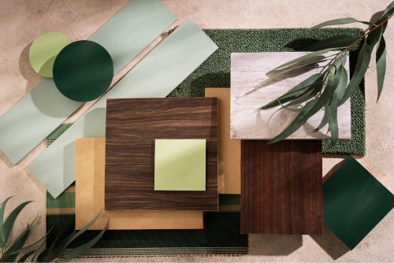
Moodboard espaços comerciais
Fonte: Freepik (c2010-2024)
Na imagem em vista superior, alguns elementos são apresentados em uma composição. São amostras em cores rosé e alguns tipos de pedras, em cores claras, escuras e texturas variadas. Uma amostra de madeira clara ripada e um tecido em algodão cru.
Sabe-se que o moodboard é uma ferramenta pessoal na criação de um designer, e os métodos de criação podem variar bastante de profissional para profissional. De todo modo, é possível ver quanto esse tipo de ferramenta é eficiente, especialmente quando se tem imagens organizadas, que sustentam uma linha de pensamento e ilustram, com certa exatidão, quais são os caminhos a serem seguidos.
Você já viu em outras unidades curriculares que o estudo preliminar é o momento em que o designer se envolve com a criação e a busca por alternativas conceituais para o seu projeto. No desenvolvimento de projetos de interiores corporativos, o processo de criação é similar. Os conceitos dos ambientes são apresentados em plantas baixas ou diagramas, para que o cliente entenda a proposta de intervenção do designer.
Existem muitas normas a serem seguidas em todas as etapas de projeto de interiores, e o estudo preliminar, sendo a primeira etapa de desenho, deve tentar abarcar as mais importantes. O estudo preliminar deverá:
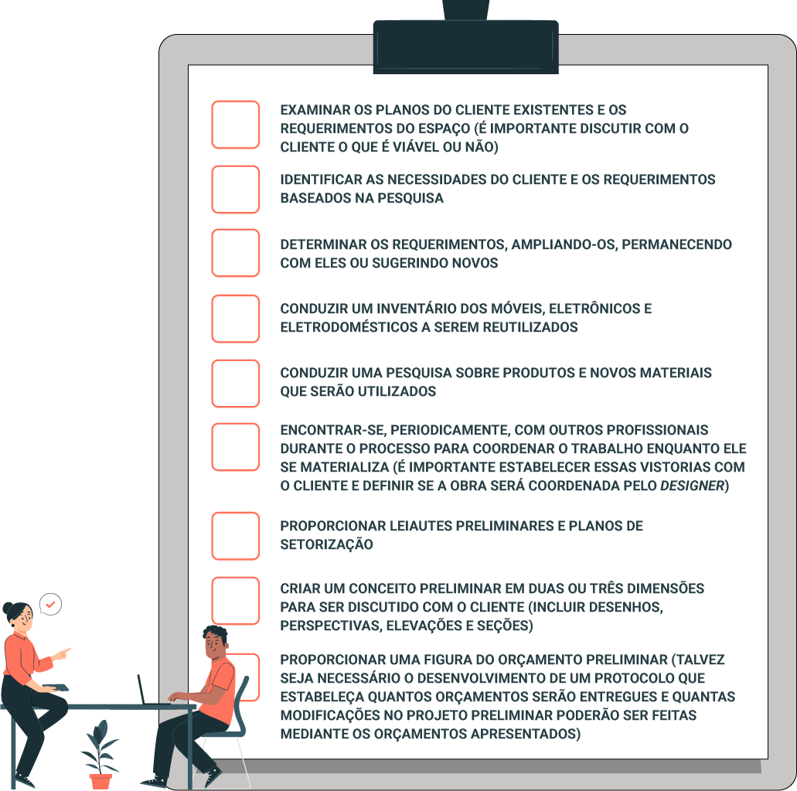Karlen (2010) traz algumas recomendações interessantes para o início dos estudos conceituais em projetos corporativos. Para o autor, o processo de esboço deve ser, desde o início, realista e não diagramático, ou seja, deve apresentar um dimensionamento próximo ao da realidade do espaço que projetará. Do contrário, é provável que imprecisões nas dimensões façam com que ele se revele pouco prático ou inviável em etapas posteriores.
Segundo o mesmo autor, você deve iniciar desenhando as paredes, com uma espessura adequada, próxima a 10 cm, que é uma dimensão nominal apropriada para a maioria dos esboços de planta baixa, mas atribua uma espessura de 20 cm para as paredes com tubulações de águas embutidas.
Com o processo de diagramação das paredes concluído, o ponto de entrada do espaço provavelmente já foi definido, além do percurso básico da circulação. Para Karlen (2010), o próximo passo é indicar os espaços menores do ambiente corporativo e que são condicionados pelos sistemas de tubulação, como cozinhas, banheiros e toaletes, já que seus tamanhos e suas possíveis localizações dentro da planta baixa são os menos flexíveis.
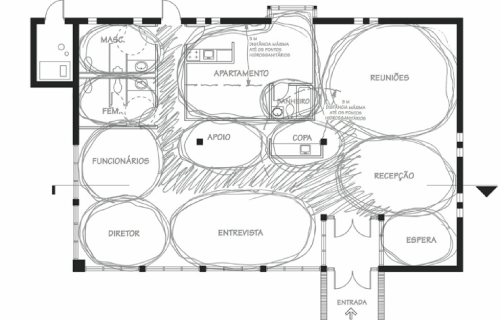
Esboço de planta baixa (primeira etapa) – zoneamento preliminar e locação dos pontos hidrossanitários
Fonte: Karlen (2010)
Na imagem, um espaço comercial é esboçado. As paredes estão desenhadas e algumas áreas são zoneadas. São elas: espaço da diretoria, de entrevistas, sala de espera, recepção, sala de reuniões, copa, sala de apoio, banheiros e apartamento.
A seguir, o designer poderá pensar os espaços principais. Na maioria dos casos, existem um ou dois espaços bem maiores ou dominantes em termos funcionais em um ambiente corporativo. O ideal é trabalhar com eles a seguir, pois sua importância é fundamental para o funcionamento do todo e, em razão de condições estruturais ou de configuração preexistentes, talvez possam ser encaixados somente em pontos limitados na planta baixa do prédio. O tamanho e o formato razoavelmente precisos do compartimento, bem como a localização das portas de acesso e outros detalhes do planejamento (como equipamentos, acessórios fixos e armários necessários), precisam ser estabelecidos nessa etapa inicial (Karlen, 2010, p. 92).
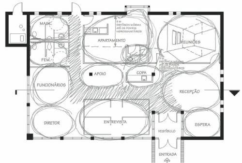
Esboço de planta (segunda etapa) – inclusão dos espaços principais
Fonte: Karlen (2010)
Nesta imagem, muito similar à anterior, os espaços principais estão zoneados e há um caminho riscado com caneta delimitando o espaço para a circulação. Esse espaço parte da porta de acesso, passa entre as salas de entrevista, apoio e copa e chega aos banheiros masculino e feminino.
Para o autor, o próximo passo é dedicar-se aos espaços para circulação; aqueles definidos por paredes internas obrigatórias (os corredores e as saídas de emergência necessárias) e os que são áreas de passagem dentro de espaços maiores. Em geral, as rotas de circulação não são bem definidas nos organogramas ou nas plantas baixas esquemáticas e podem ocupar um espaço maior do que o previsto.
Nessa etapa, é importante verificar se na planta baixa, especificamente, há duas saídas de emergência afastadas e conferir o percurso máximo até uma saída, as larguras dos corredores, os corredores sem saída e as obstruções dos corredores, entre outros fatores. Nesse ponto, também é importante conferir a eficiência do espaço de circulação e determinar o percentual de espaço que será ocupado por corredores e outros caminhos.
Ainda nessa etapa, vale prosseguir distribuindo os demais compartimentos básicos. O projetista continua considerando as exigências do programa de necessidades, priorizando de maneira adequada os espaços que exigem luz natural e ar fresco, privacidade e controle acústico (as zonas íntimas ou de silêncio). Nessa fase de planejamento, ainda de acordo com Karlen (2010), não se esqueça dos conflitos de abertura de portas, uma vez que, à medida que a planta baixa se concretiza, torna-se mais difícil corrigi-los.
A melhor maneira de evitar esse problema é desenhar a abertura das portas enquanto a planta baixa se desenvolve, em vez de lidar com ele mais tarde.
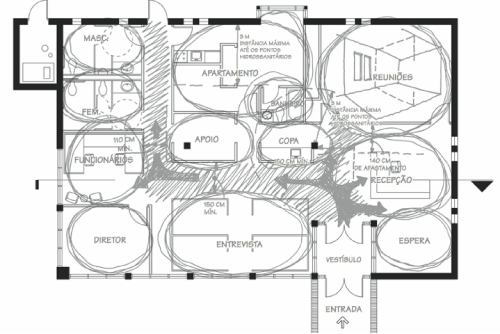
Esboço de planta baixa (terceira etapa) – inclua os espaços de circulação
Fonte: Karlen (2010)
Nesta imagem, a mesma planta baixa segue sendo trabalhada. Aqui o autor desenvolveu melhor os espaços de circulação, estudou as larguras dos corredores e eliminou possíveis obstruções. O desenho segue sendo esquemático.
Um erro frequentemente cometido por projetistas inexperientes, de acordo com Karlen (2010), é a continuação desnecessária de corredores sem saída, conforme mostrado nos esboços “certo” e “errado”.
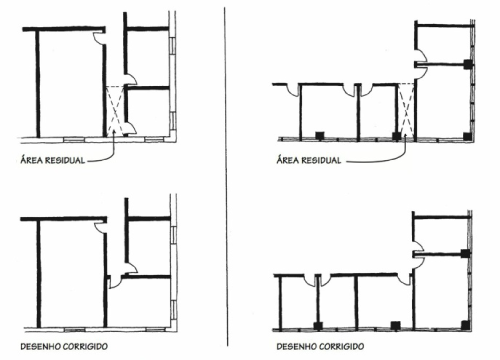
“Certo” e “errado” no projeto de corredores
Fonte: Karlen (2010)
A imagem é dividida em um eixo vertical. No lado esquerdo, há na parte superior uma planta baixa na qual constam três ambientes, dentre eles uma área residual, com um corredor que vai até a parede dos fundos. Na imagem abaixo desta, o desenho é corrigido, uma vez que o corredor é minimizado, não indo mais até a parede dos fundos. No lado direito, outra situação similar é apresentada. Na parte superior da imagem, há uma planta baixa, com cinco ambientes e um pequeno corredor entre os ambientes centrais. Na imagem abaixo desta, a situação é corrigida, sendo o corredor residual eliminado e os espaços dos ambientes ampliados.
Em geral, o uso eficiente dos espaços para circulação deve ser um critério prioritário de planejamento, a fim de que áreas de piso importantes não sejam desperdiçadas e que os padrões de deslocamento sejam convenientes para os usuários.
Após tomar as decisões iniciais sobre a disposição das paredes internas para configurar os compartimentos e espaços, é crucial avançar rapidamente para a organização dos móveis e equipamentos essenciais. Com o tempo, pode-se descobrir que, em razão do tamanho e/ou da configuração (como o formato do compartimento, a localização de portas e janelas etc.), pode ser impossível atender plenamente às exigências do programa de necessidades em um ou mais espaços.
Não é necessário nem recomendável finalizar a distribuição do mobiliário nessa fase, mas é de extrema importância avaliar se o leiaute inicial dos móveis básicos será funcional.
Esboço de planta baixa – inclusão do mobiliário
Fonte: Karlen (2010)
Na continuidade e no melhoramento da planta baixa das imagens anteriores, os móveis são alocados em seus devidos lugares. Desse modo, o desenho fica mais claro e compreensível. Após a entrada principal, há um vestíbulo. Há direita, há uma sala de espera com uma mesa central e seis cadeiras. À frente dessa sala está a recepção. À direita do vestíbulo, há uma sala de entrevistas com uma bancada e três cadeiras. Ao lado esquerdo desse espaço está a sala do diretor, com mesa de escritório, poltronas, armários e duas cadeiras à frente da mesa do diretor. No centro da planta baixa há a sala dos funcionários, a sala de apoio e a copa. No canto superior esquerdo estão os banheiros masculino e feminino. Ao lado, um corredor. Ao lado do corredor, um pequeno apartamento integrado. Ao lado direito do apartamento, há uma sala de reuniões.
Quando a planta baixa se torna visualmente compreensível em sua totalidade, independentemente da qualidade do desenho, torna-se crucial realizar uma revisão básica. Essa etapa envolve uma autorrevisão, na qual as habilidades de autocrítica objetiva do projetista precisam ser exercitadas. Utilize um lápis grosso ou colorido, uma caneta e uma folha de papel-manteiga para sobrepor (ou uma cópia da planta baixa), destacando todas as características que não atendem plenamente às exigências estabelecidas na matriz de critérios ou que apresentam deficiências.
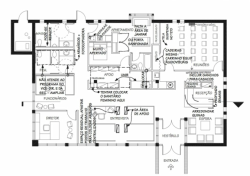
Esboço de planta baixa – correções a fazer
Fonte: Karlen (2010)
A mesma planta baixa é trabalhada e, nesta figura, algumas correções são feitas, como a redução do banheiro masculino, a ampliação da sala dos funcionários. No apartamento, foi identificado que faltava uma sala de jantar, e o espaço do dormitório estava muito apertado. Entre as salas de apoio e a copa, uma bancada foi unida; na sala de reuniões, viu-se a necessidade de incorporar um carrinho para a equipe de audiovisual e ampliar o número de mesas e cadeiras. Na sala de recepção, foi percebida a necessidade de arredondar os cantos dos móveis e incluir ganchos para os casacos.
Depois de passar pelo processo longo e frequentemente complexo que resultou em um esboço de planta baixa revisado, é possível que o projetista olhe para o resultado e conclua que a solução atual está muito longe de ser a melhor solução possível, considerando que não é aceitável. A única saída é reiniciar o processo, partindo do aperfeiçoamento de outro organograma ou outra planta baixa esquemática. Embora seja uma decisão difícil, um segundo esboço de planta baixa é muito mais rápido de ser elaborado. No início da segunda tentativa, o desenvolvimento da planta baixa original já terá agregado insights sobre o que funcionará ou não (Karlen, 2010, p. 101).
Na imagem, é possível ver o esboço da planta baixa revisado com base nas correções feitas anteriormente:
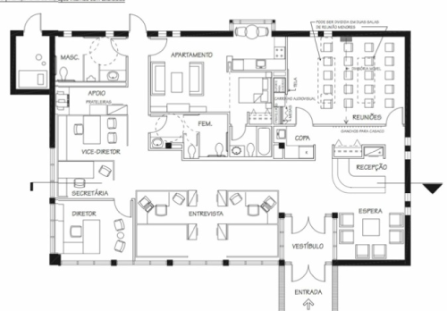
Esboço de planta baixa revisado (com base nas correções marcadas anteriormente)
Fonte: Karlen (2010)
A planta é passada a limpo com base nos ajustes feitos, restando elementos como paredes, aberturas e mobiliário.
Em síntese, o estudo preliminar revela-se como um componente fundamental no processo de concepção de projetos de interiores corporativos. Ao estabelecer as bases iniciais, considerando a disposição de paredes, a distribuição de espaços e a seleção de mobiliário, esse estágio proporciona uma visão holística do ambiente a ser criado. Além disso, ao permitir ajustes antes da etapa final, o estudo preliminar capacita os designers a antecipar desafios, otimizar funcionalidades e assegurar que o leiaute atenda de maneira eficaz às necessidades do cliente. Assim, a diligência investida nessa fase inicial não apenas reflete na eficiência do projeto, mas também contribui significativamente para a satisfação do cliente e o sucesso do empreendimento corporativo como um todo.
O anteprojeto representa uma fase intermediária crucial no desenvolvimento de projetos de interiores. Essa etapa tem início com a aprovação do esquema inicial durante o estudo preliminar e avança para a elaboração dos documentos essenciais que serão posteriormente utilizados na execução da obra. Dessa forma, é essencial garantir um elevado nível de precisão e qualidade no material apresentado tanto para o cliente quanto para a equipe encarregada da execução, a fim de assegurar uma execução eficiente e satisfatória do projeto.
Você já estudou em unidades curriculares anteriores que a etapa de anteprojeto é aquela na qual o cliente emitirá sua aprovação final do projeto, permitindo o encaminhamento das aprovações aos órgãos responsáveis pela fiscalização, como prefeitura municipal, corpo de bombeiros e demais secretarias. Para tanto, a NBR 6492, que trata da representação gráfica de projetos de arquitetura, estipula uma série de documentos necessários para o correto entendimento do trabalho nessa etapa. Veja quais são esses documentos:
| Documentos típicos |
|
|---|---|
| Documentos eventuais |
|
Documentos necessários no anteprojeto
Fonte: Adaptado de ABNT (1994) apud Giambastini et al. (2020)
Quadro dividido entre duas linhas e duas colunas. Na coluna da esquerda, há uma divisão entre documentos típicos e documentos eventuais. São os documentos típicos descritos: situação (geralmente não aplicável a projetos de interiores); plantas, cortes e fachadas; memorial justificativo, abrangendo aspectos construtivos; discriminação técnica; quadro geral de acabamento (facultativo); documentos para aprovação em órgãos públicos; lista preliminar de materiais. São os documentos eventuais descritos: desenvolvimento de elementos de interesse, em casos especiais; maquete; estimativa de custo. É importante ressaltar que, embora a ANBT tenha esse documento como facultativo nesta etapa, ele se mostra de grande importância ao cliente, que pode ter uma boa perspectiva dos principais custos envolvidos em seu projeto e, com base nisso, ponderar as soluções de projeto que podem ou não ser levadas adiante no projeto executivo.
Para Giambastini et al. (2020), nos projetos de design de interiores corporativo, orçamento e cronograma são dois dos itens mais importantes, uma vez que o cliente que contrata um projeto dessa natureza visa à obtenção de lucro com seu empreendimento. Portanto, no anteprojeto, é necessário que o arquiteto elabore propostas que garantam a correta orçamentação de materiais e serviços, além de permitirem a elaboração de um cronograma preliminar da obra, para que o cliente possa se programar financeiramente.
O anteprojeto representa a fase em que o designer trabalha em estreita colaboração com o cliente para estabelecer uma série significativa de atributos para o projeto, abrangendo desde a seleção de materiais até a elaboração do orçamento. Essa etapa é crucial para a produção subsequente da documentação da obra. O anteprojeto evolui com base nas definições fundamentais delineadas no estudo preliminar, como a distribuição espacial, e alcança sua conclusão somente com a aprovação final do cliente, desempenhando, assim, um papel de grande relevância no conjunto do projeto de arquitetura.
Com base na apresentação de desenhos técnicos, o cliente emitirá o seu aceite para o prosseguimento da obra. Desse modo, o designer precisa apresentar informações claras e completas que permitam a total compreensão por parte do contratante.
Veja exemplos práticos de como um anteprojeto de interiores corporativo é apresentado para os clientes. Na figura, é apresentado o anteprojeto de uma academia localizada na cidade de Porto Alegre, no Rio Grande do Sul.
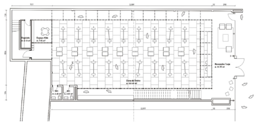
Planta de leiaute
Fonte: Giambastini et al. (2020)
Na imagem, é apresentado anteprojeto para uma academia localizada na cidade de Porto Alegre. No leiaute há um grande espaço central para zona de treino. À esquerda está a recepção da loja. No canto esquerdo há um depósito e um espaço kids. Na parte inferior da planta existem dois banheiros, um feminino e outro masculino.
Nesse documento, estão presentes as principais informações para que o cliente compreenda o espaço, como a posição da recepção, dos banheiros, das circulações, as verticais e a quantidade de alunos que podem ocupar o espaço ao mesmo tempo. Ou seja, para quem está interessado no funcionamento de uma academia, todas as informações necessárias estão contidas no desenho. Para o construtor, no entanto, faltam elementos essenciais, como dimensões das paredes, áreas de piso e indicação dos revestimentos das paredes.
Agora, imagine que o desenho inclua, além das informações que já estão presentes, aquelas destinadas ao construtor. O resultado seria uma representação confusa, tanto para o cliente quanto para o construtor. Desse exemplo, é possível depreender um princípio da representação arquitetônica: não há desenho absoluto (Giambastini et. al., 2020, p. 106).
Além do leiaute, pode ser essencial desenvolver uma planta específica que destaque exclusivamente as paredes do ambiente. Essa planta, conhecida como “planta de paredes”, é crucial para que a empresa encarregada da construção possa estimar com precisão a quantidade de trabalho e os materiais necessários para a execução da obra. Nessa representação, são apresentadas cotas que indicam as medidas dos elementos construídos, proporcionando uma visão detalhada para o planejamento e a execução do projeto.

Planta de paredes
Fonte: Giambastini et al. (2020)
Na imagem a planta baixa do espaço é redesenhada, porém apenas com os desenhos das paredes, aberturas e cotas de dimensionamento.
No que se refere aos desenhos técnicos, os cortes desempenham um papel crucial nessa fase, permitindo que tanto o cliente quanto o construtor compreendam as relações de altura entre os elementos construtivos.
A imagem do corte longitudinal ilustra um corte do espaço em questão, revelando as variações de pé-direito entre o térreo e o segundo pavimento, além de destacar a imponente escada embutida na parede.
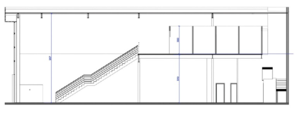
Corte longitudinal
Fonte: Giambastini et al. (2020)
A imagem apresenta um corte do espaço que está sendo acompanhado, no qual se revela as diferenças de pé-direito entre o térreo e o segundo pavimento, além da grande escada engastada na parede.
Já a utilização de perspectivas cônicas possibilita a representação da forma como os espaços são percebidos pelos observadores, tornando-se ferramentas particularmente valiosas para a compreensão do projeto, especialmente por parte daqueles menos familiarizados com desenhos técnicos.
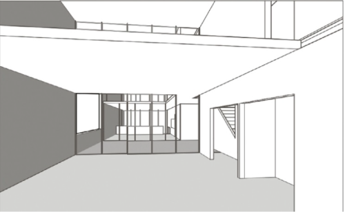
Perspectiva cônica
Fonte: Ching (2012)
A figura apresenta uma perspectiva cônica de um espaço de interiores, com aberturas, um mezanino e grande porta de vidro. A imagem oferece um método de distribuição correta dos objetos no espaço, ilustrando a forma como eles diminuem de tamanho à medida que se distanciam, proporcionando, assim, uma visão experimental do espaço.
Finalmente, visando à aprovação do projeto pelo cliente, é possível criar imagens renderizadas com diversos níveis de fotorrealismo. Na imagem, é exibida uma renderização do projeto da academia que foi apresentada aos clientes, com a intenção de proporcionar uma visão realista de materiais e texturas planejados para o projeto.
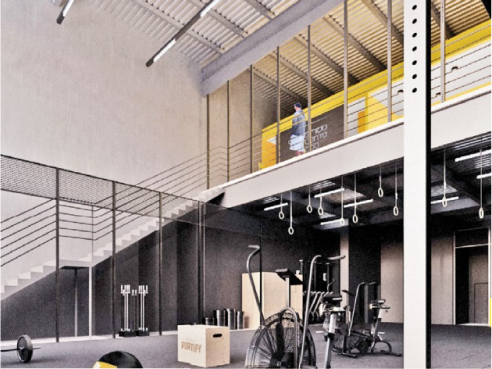
Renderização do espaço
Fonte: Giambastini et al. (2020)
A imagem apresenta uma visualização renderizada do espaço que está sendo acompanhado: a academia. Nele, vê-se a produção de uma imagem, de cunho digital, em que o objetivo é mostrar aos clientes os materiais e as texturas do projeto. Nesta visualização, vê-se parte do primeiro nível da edificação, com alguns aparelhos de academia, parte da escada e parte do mezanino.
No anteprojeto de interiores corporativos, você viu que é essencial que o designer consiga adequar a sua linguagem, seja para se comunicar com seu cliente, seja para se comunicar com seus colaboradores.
Segundo Giambastini et. al (2020), as imagens renderizadas são um dos elementos mais facilmente entendidos pelos clientes. Com esse tipo de trabalho, é possível simular em ambiente computacional os materiais e as texturas do projeto com um nível alto de fotorrealismo, sendo possível, inclusive, inserir iluminação análoga àquela que será instalada no local. Desse modo, o cliente poderá compreender como o espaço ficará após a finalização da obra.
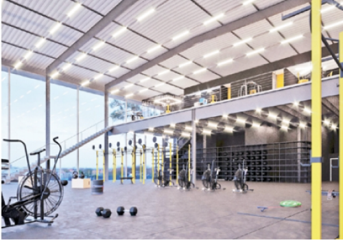
Espaço renderizado
Fonte: Giambastini et al. (2020)
Na imagem é possível ver o ambiente da academia renderizado, com aplicação de materiais, texturas e iluminação. É possível identificar o primeiro pavimento da academia e o mezanino, além dos equipamentos para atividade física disponibilizados.
No entanto, ainda segundo Giambastini et al., é muito difícil discutir soluções de projeto específicas sem a presença de uma planta baixa, visto que é o desenho perfeito para o cliente entender a distribuição espacial ao longo do projeto. Deve ser dada especial atenção à graficação das peças, para que não fique muito difícil de entendê-las.
Observe, na imagem da planta baixa, como foram destacados em vermelho os espaços corporativos que o cliente deveria aprovar nesta entrega.
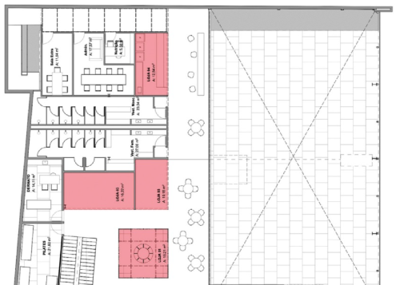
Planta baixa com destaques
Fonte: Giambastini et al. (2020)
A imagem apresenta a planta baixa de um espaço corporativo com alguns espaços destacados para aprovação do cliente.
Diferentemente da ênfase dada ao cliente, para a mão de obra, a ênfase recai principalmente na precisão e na clareza das informações. Nesse sentido, é comum fornecer conjuntos de plantas, cada uma focada em sua especificidade, evidenciando elementos do projeto, como pisos, luminárias e instalações elétricas.
Veja, na figura, um conjunto de plantas fornecido à mão de obra, destacando detalhes específicos, como pisos e procedimentos de demolição.
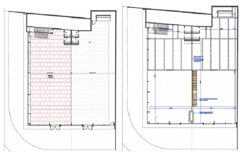
Planta de piso e demolições
Fonte: Giambastini et al. (2020)
A figura apresenta um conjunto de plantas entregues para a mão de obra, destacando pisos e demolições.
Assegurar uma estimativa de custos precisa requer a elaboração de desenhos não apenas para os responsáveis pela construção civil, mas também para todos os fornecedores envolvidos. Não hesite em fazer contatos com seus parceiros de obra sempre que for necessário.
Em resumo, o anteprojeto desempenha um papel crucial tanto em projetos de arquitetura de edificações quanto de interiores. É por meio dessa fase que o cliente obtém uma compreensão clara do espaço projetado, visualizando o resultado final. Além disso, é durante o anteprojeto que os orçamentos são apresentados às equipes de execução, proporcionando ao cliente uma visão precisa do que esperar em termos de aparência e custo da obra. Portanto, na etapa do anteprojeto, é imperativo que os arquitetos dominem as ferramentas disponíveis para representar adequadamente os aspectos relevantes do projeto.
A seguir, confira a etapa de projeto.
Com os itens anteriores definidos, passa-se à etapa de projeto. Neste momento, o cliente do projeto corporativo já compreendeu os principais aspectos da obra no anteprojeto e, eventualmente, pode ter solicitado algumas modificações, realizadas pelo designer. Então, é chegada a fase de projeto em que o designer produz o material necessário para a correta execução da obra.
Conforme observado, os desenhos variam em cada fase do projeto, e essa distinção é atribuída a dois motivos fundamentais:
No projeto, os desenhos, as planilhas e os detalhes apresentados aos fornecedores são esmiuçados, servindo de base para a execução. Nessa etapa, apresentam-se os desenhos para os clientes, com a finalidade de mostrar as soluções definitivas que serão adotadas, bem como as alterações que podem ser feitas em virtude de outras variáveis, como tempo e custos (Giambastini et.al, 2020, p. 153).
No projeto de design de interiores corporativos, algumas documentações específicas são fundamentais:
As plantas do projeto, normalmente, serão as mesmas apresentadas no anteprojeto, porém mais detalhadas, com as especificações e os acabamentos necessários para a produção de cada componente do projeto.
As plantas provenientes do anteprojeto receberão mais informações importantes, como plantas baixas e cortes, com a descrição dos acabamentos e revestimentos que comporão o quadro geral de acabamentos.
Perceba, na figura da planta baixa executiva, o projeto da disposição interna de uma loja, destacando todas as indicações dos cortes essenciais para a construção, com a identificação das pranchas em que foram desenhados. Todas as dimensões cruciais para a construção da loja estão devidamente representadas.
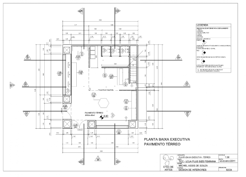
Planta baixa executiva
Fonte: Souza (2011)
Na imagem há uma planta baixa executiva de uma loja contendo todas as marcações dos cortes necessários para a construção, com a identificação das pranchas em que estão desenhados. Todas as cotas necessárias à construção da loja estão ali representadas.
Na fase de projeto, os detalhes são elementos muito importantes, pois mostrarão em maior escala todos os itens de construção que necessitam de atenção. De acordo com Rodrigues e Scopel (2018), esses detalhes ampliados podem corresponder, por exemplo: a componentes do mobiliário escolhido ou das bancadas a serem construídas; a um projeto de forro que tenha recortes e luminárias a serem instaladas internamente; ou a outros elementos de construção mais complexa e que demandem um desenho específico. Conforme aponta Kubba (2014), os detalhes precisam ser desenhados em escala, sendo mais comuns as de 1:10, 1:5 e 1:2.
Veja, por exemplo, no detalhamento da figura do detalhe mobiliário, que conta com a planta baixa principal, uma vista em corte expondo a parte interna do mobiliário e elevações que apresentam as projeções das portas e a aparência exterior do móvel:
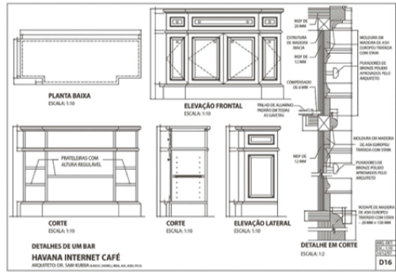
Exemplo de detalhe de mobiliário
Fonte: Rodrigues (2018)
Na imagem é visto o detalhamento de um móvel. Há uma planta baixa mostrando suas dimensões horizontais, cortes expondo a parte interna do mobiliário, com a espessura de prateleiras, e elevações que apresentem as projeções de portas e a aparência exterior do móvel.
Neste outro detalhamento apresentado por Rodrigues e Scopel (2018), é detalhada uma bancada. Essa estrutura receberá a colocação de um móvel no granito, que também precisa ser detalhada, sendo o corte o tipo de desenho que melhor transmite essa informação, trazendo as dimensões de alturas e especificações importantes para a construção desse elemento.
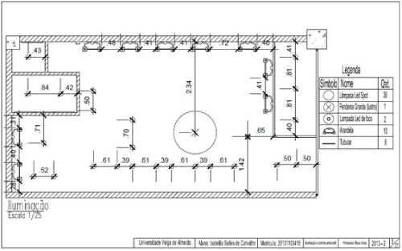
Exemplo de detalhamento de móvel
Fonte: Rodrigues e Scopel (2018)
A imagem é subdividida em duas partes. À esquerda há um corte típico em um armário de cozinha, mostrando espaço para tubulação, painel de metal, estrutura de perfis tubulares, contendo todas as cotas de altura necessárias para compreensão do móvel. Na imagem da direita há uma perspectiva cônica do mesmo móvel mostrando detalhes como pernas, espelho, fundo de metal e estrutura ajustável.
Observe, de acordo com o que apresentam Rodrigues e Scopel (2018) nesse exemplo de elevação, como todos os componentes do mobiliário contam com informações pertinentes à sua elaboração. Observe também que os detalhes são marcados. Nas elevações, todas as medidas gerais são demonstradas em uma vista. Já na planta, estão presentes as medidas horizontais de larguras e profundidades, bem como as projeções das portas.
Outra documentação importante nesta fase é o detalhamento luminotécnico. Em um contexto corporativo, a iluminação desempenha um papel fundamental na criação de uma atmosfera atraente e convidativa para funcionários e clientes. Por meio da planta luminotécnica, é possível determinar a disposição estratégica de luminárias, focos de luz e pontos de destaque, garantindo uma visibilidade adequada dos produtos e uma experiência agradável para os usuários do espaço.
Perceba que, na planta baixa luminotécnica, a distribuição das lâmpadas está organizada por meio de cotas de localização, enquanto as quantidades e os tipos estão apresentados em legenda lateral. Para realizar essas escolhas e quantificar os itens, o designer deverá dominar os cálculos luminotécnicos, que, em um ambiente corporativo, serão distintos dos ambientes residenciais.
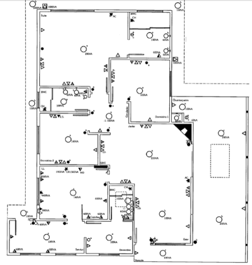
Planta luminotécnica
Fonte: Salles (s. d.)
A imagem apresenta uma planta baixa de um espaço corporativo, em formato retangular, em que constam os elementos de iluminação e suas devidas simbologias. Na legenda constam lâmpada led spot, lâmpada pendente, arandelas e lâmpadas tubulares.
Outro documento essencial em um projeto corporativo é a elaboração e o detalhamento da planta elétrica. Independentemente de ser um projeto elétrico residencial, corporativo ou industrial, ele é desenvolvido com base em uma planta baixa civil (arquitetônica). Se necessário, é possível realizar o levantamento da planta baixa do local de instalação.
Planta baixa elétrica
Fonte: Desterro Eletricidade (2017)
A imagem apresenta uma planta baixa, com oito ambientes distintos, em que constam as paredes e simbologias elétricas.
Nesta etapa do projeto, é fundamental que o designer faça também o detalhamento da planta de forro do espaço corporativo, na qual detalhes como tipo de forro, sancas e cortineiros sejam compreendidos.
Se as plantas baixas tratam de demonstrar tudo o que está abaixo do plano imaginário colocado por convenção a 1,5 m do piso, as plantas de forro – ou de teto rebatido, como são chamadas em algumas publicações – representam a camada mais alta do projeto. Em outras palavras, o seu plano de vista está acima do forro, olhando para baixo.
Observe como os elementos móveis que estão abaixo do forro, como cadeiras, mesas e sofás, não aparecem nesses desenhos, enquanto elementos fixos, como armários e escadas, são representados. O motivo dessa diferença é que, ao contrário da maioria dos móveis soltos, os armários exercem influência no posicionamento de luminárias e nos acabamentos do forro (Giambastini et.al, 2020, p. 219).
Além do detalhamento técnico, apresentar as especificidades da planta de forro é fundamental. Essas especificidades incluem tanto a estética do forro quanto elementos que terão impacto na iluminação e na acústica do espaço. Ao fornecer uma representação clara do forro, os profissionais de construção podem entender melhor os requisitos, minimizando erros e retrabalho.
Planta de forro
Fonte: Giambastini et al. (2020)
Na imagem há a representação de uma planta de forro. Além de forros novos, forros a serem demolidos e forros existentes, constam as luminárias do espaço. O espaço é subdivido em oito ambientes, os quais têm demarcação em cores como cinza-claro, cinza-médio, alaranjado e vermelho.
Para finalizar, que tal praticar um pouco o que você aprendeu?
Clique ou toque em um botão da coluna numerada e depois escolha um botão da coluna com o símbolo de com a opção que achar a mais correta.
Cada detalhe meticulosamente planejado e cada decisão estratégica tomada durante o processo de design desempenham um papel vital na criação de espaços que transcendem simplesmente a estética. Ao invés disso, essas etapas se convertem em ferramentas poderosas para moldar experiências e influenciar positivamente a funcionalidade dos ambientes corporativos.
Você percebeu que a importância das etapas de projeto não se limita à fase de execução. A coordenação eficiente entre profissionais e a comunicação transparente são cruciais para garantir que a visão concebida ganhe vida de maneira coesa e sem contratempos. Essa colaboração contínua não apenas assegura a integridade do design, mas também maximiza o potencial de impacto positivo nos usuários finais.